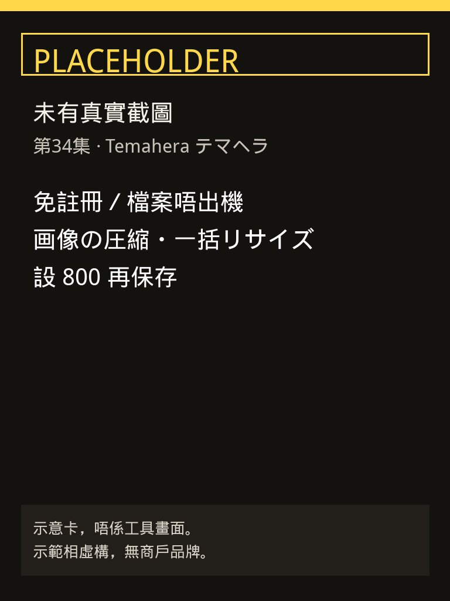
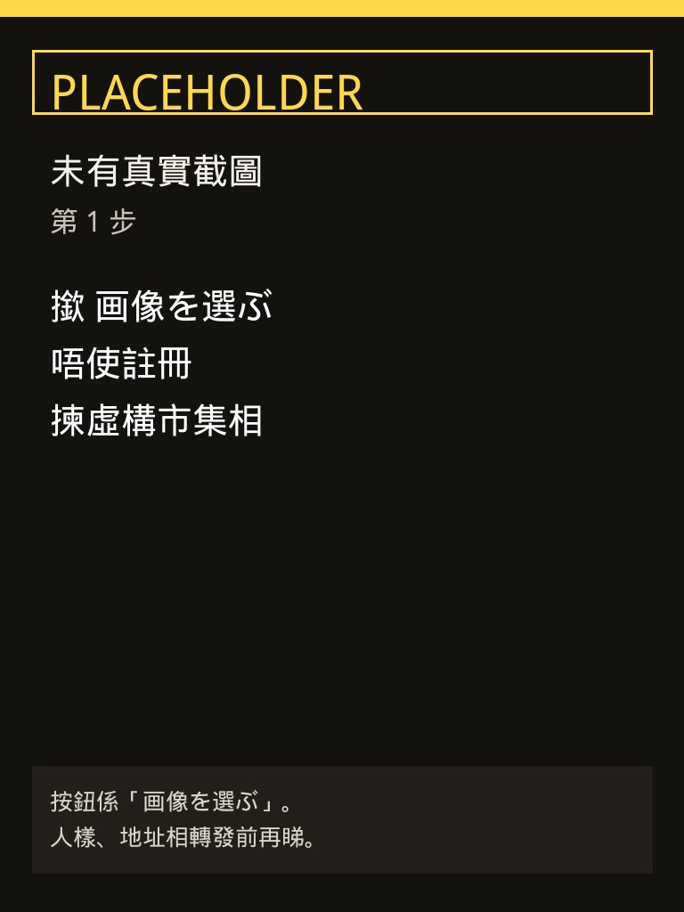
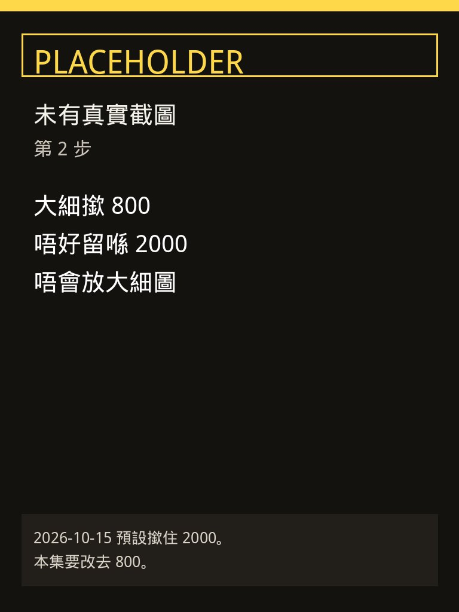
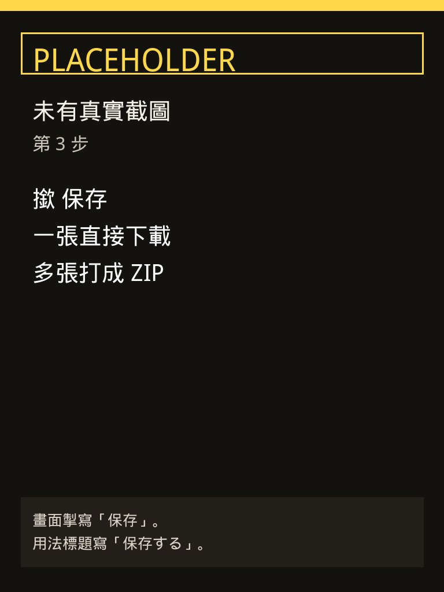

屋苑群或者班群要轉發檔口相，原圖太大，又唔想張相上載去壓縮網站。第34集用 Temahera（テマヘラ）嘅「画像の圧縮・一括リサイズ」：撳 画像を選ぶ，大細由預設 2000 改去 800，再撳保存。工具頁寫檔案同輸入內容唔會送到外部，處理留喺瀏覽器，唔使註冊。示範相係虛構週末市集檔口，無商戶品牌。
Reel 一句講晒：Temahera｜免註冊／檔案唔出機
48 小時內：アトベイス株式会社 2026-10-15 11:03（日本時間）新聞稿，話當日免費公開工具集テマヘラ，一共 88 種，檔案唔使送出端末。本集槽位 2026-10-16 12:00（香港時間，即日本 13:00），距新聞稿大約 26 小時，未過 48 小時。88 係新聞稿寫「2026-10-14 清單頁」計出嚟，之後可能加工具，以你當日清單為準。
圖係步驟示意，唔係工具畫面：呢頁未有當日工具截圖。下面四張寫住 PLACEHOLDER，只係提醒步驟。掣名以你當日網站為準。畫面個保存掣寫「保存」，用法小標題寫「保存する」，唔係成句「画像を保存」。
你會學到
- 點樣開圖像壓縮頁，撳 画像を選ぶ，唔使註冊
- 點樣由預設 2000 改去 800
- 點樣撳保存；同埋點解檔案仍然要當私人相處理
開始前準備
- 瀏覽器開 画像の圧縮・一括リサイズ。示範冇註冊、冇裝 App。介面係日文
- 一張 JPG、PNG 或者 WebP。示範用虛構週末市集檔口相，無商戶名、無人樣特寫、無地址紙
- 頁面寫可以唔使登入就用。想自己核對「唔出機」，可以跟頁面下載呢個工具嘅原始碼 ZIP

3 步做法
-
撳 画像を選ぶ：開上面條工具頁。揀圖個掣寫住 画像を選ぶ。撳佢揀示範相。旁邊另有「画像を追加」，本集第一步用「画像を選ぶ」。
頁頂寫住會員登録なし、同埋「ファイルや入力内容は、外部に送信されません」。下面再寫瀏覽器入面處理。關頁之後，頁面話數據會消失，所以要嘅結果要自己保存。
示範相虛構，無商戶品牌。人樣、學生相、住址紙，即使用瀏覽器工具，轉發去群之前都要再睇一次。

示意卡（PLACEHOLDER，未有真實截圖）：第 1 步撳 画像を選ぶ。唔係工具截圖。 -
設 800：大細一列係 元のまま、2000、1200、800、指定。2026-10-15 打開，2000 係撳住嘅預設。本集改撳 800。
頁面寫「大きくはしません」：唔會放大。原圖短邊已經細過 800，就維持原尺寸，唔好以為一定變大到 800。
形式有 JPG、WebP、PNG。本集只改大細。頁面寫 WebP 畫質 80 左右多數睇唔出分別，舊軟件可能開唔到。群組要人人開到，就留 JPG，以你當日畫面為準。

示意卡（PLACEHOLDER，未有真實截圖）：大細改 800。2026-10-15 預設係 2000。唔係工具截圖。 -
撳保存：畫面個掣寫「保存」。用法三步嘅小標題寫「保存する」。本集跟畫面掣名，撳保存。
用法寫：一張就下載嗰張；多過一張就打成 ZIP。下載之後打開睇清楚係咪你要嗰張、字仲讀唔讀到，先轉發。
頁面問答寫，壓縮後嘅相唔包含拍攝位置等 Exif。轉發前仍然自己睇一次個相入面有冇人樣同地址。

示意卡（PLACEHOLDER，未有真實截圖）：撳「保存」。用法標題係「保存する」。唔係工具截圖。
常見錯誤／注意事項
- 留喺預設 2000：2026-10-15 打開，2000 係撳住。本集要再撳 800。
- 搵「画像を保存」成句：畫面掣係「保存」。用法小標題係「保存する」。搵唔到成句就撳「保存」。
- 當 88 個工具全部都唔出網：新聞稿寫，網站診斷等 8 種會由佢哋伺服器攞公開網頁，攞完唔保存。圖像壓縮呢頁寫檔案同輸入唔送去外部。唔好將 8 種診斷工具講成同樣唔出網。
- 當關頁仍然留低檔：頁面寫關頁數據會消失。要嘅相要撳保存，先至落喺你部機。
- 當瀏覽紀錄都唔會送出：頁面寫為改善網站，用 Google 分析計頁面瀏覽；同一段寫工具唔會送檔案同輸入內容。計頁面唔等於張相上載咗。
- 示範相當真實商戶：虛構週末市集相，無商戶品牌。人樣、學生相、地址紙唔好轉發去群。
示範相虛構，無商戶品牌。圖像壓縮呢頁：瀏覽器內處理，頁面寫外部に送信されません。88 個入面有 8 種網站診斷會攞公開網頁，唔好混為一談。
香港用戶留意
用瀏覽器開日文頁就得，示範冇註冊、冇裝 App。要認嘅字：画像を選ぶ、800、保存。群組相轉發之前自己打開睇一次。呢頁只示範壓縮同改大細，唔係教你上載去其他平台。
官方說明
- 画像の圧縮・一括リサイズ（Temahera）
2026-10-15 打開：掣係 画像を選ぶ、大細 2000／1200／800／指定、保存。頁面寫檔案同輸入唔送去外部，瀏覽器內處理，關頁數據消失，唔使會員登録。壓縮後唔包含 Exif。營運寫東京都渋谷区のアトベイス株式会社 - テマヘラ 工具清單
新聞稿指向嘅清單。88 係 2026-10-14 清單計法，當日頁面先算數 - PR TIMES 新聞稿（2026-10-15 11:03）
寫 2026-10-15 免費公開 88 種、檔案唔送出端末、原始碼公開、唔使註冊。除網站診斷等 8 種之外，開頁之後斷線仍可處理。本集圖像工具對應該句「唔出機」，8 種診斷要分開睇
（工具頁同新聞稿當日打開。逐步圖係示意卡，未有真實截圖。介面可能更新，以官方為準）
原帖
睇原 Reel ↗（2026-10-16 發佈）